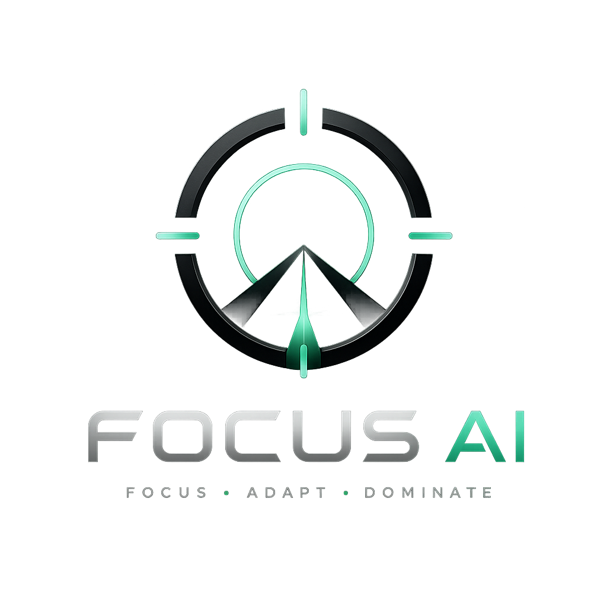
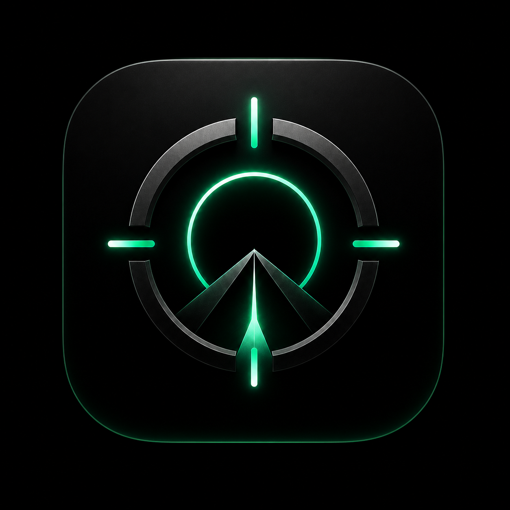

Focus AI
Kelajak odatlar ustiga quriladi
?
Ma'lumotlar faqat shu qurilmada, offline saqlanadi.

FOCUS AI❝
0%
🔥
0
🕐
0m
⚡
0%
🎯
0/0
FOKUS REJIMI
Bitta chuqur blok. Nol shovqin.
25:00
tayyor
✕
0
0
0
❝
AI Coach
🛍
?
›
30
10 000
AI Coach
FOKUS REJIMI
Deep Work
25:00
Fokus
0%
—
5
🏆
0m
30
0
0
—
⏰
?
🔒